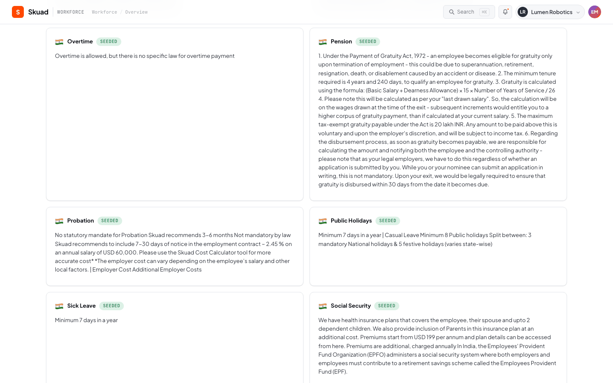

Provenance & Audit Trail¶
1. Feature Name¶
End-to-End Rule Provenance Tracking & Immutable Audit Trail
2. Business Problem Solved¶
In regulated environments, it is not enough to know that a compliance rule exists — stakeholders must be able to answer: "Where did this rule come from? Who approved it? What was the source evidence? When was it adopted?" The provenance system provides a complete, tamper-evident chain from government source URL to published employment rule.
3. Operational Pain Points Addressed¶
- "Where did this number come from?" — Client advisors cannot trace a published rule back to its official source
- Audit failures: External auditors require documentary evidence of due diligence for every compliance rule
- Accountability gaps: No record of who reviewed a change or what evidence they considered
- Model lineage: When extraction quality degrades, there is no way to determine which model version produced a given rule
- Temporal reconstruction: Cannot determine what rules were effective at a specific historical date
4. User Personas Involved¶
| Persona | Interaction |
|---|---|
| External Auditor | Examines provenance chains to verify governance controls |
| Compliance Lead | Reviews provenance when a rule is disputed or questioned |
| Client Advisor | Traces a published rule to its official source when advising employers |
| Platform Engineer | Debugs extraction quality by checking parser version and confidence |
5. Functional Overview¶

The provenance system records a linked chain for every published rule:
Government Source URL
→ Crawl Event (ingestion job with timestamps)
→ Source Snapshot (raw HTML with content hash)
→ LLM Extraction (confidence, parser version, source fragment)
→ Review Decision (reviewer, rationale, comment, timestamp)
→ Published Rule (value, effective date, version number)
6. End-to-End Workflow¶
Provenance Creation¶
Provenance records are created at three points:
- On approval:
ReviewService.approve_review_item()→ProvenanceService.record_approval() - On bulk approval:
ReviewService.bulk_approve_non_critical()→ProvenanceService.record_bulk_approval() - On initial seed:
notion_import.py→ProvenanceService.record_seed()
Provenance Chain Resolution¶
flowchart LR
A[country_guide] -->|current_provenance_id| B[rule_provenance]
B -->|source_snapshot_id| C[source_snapshots]
B -->|ingestion_job_id| D[ingestion_jobs]
B -->|review_queue_id| E[review_queue]The get_current_chain() method performs LEFT JOINs across all linked tables in a single query, returning a nested response:
{
"canonical_rule": {
"country": "India",
"section": "minimum_wage",
"value": "INR 23,500/month for scheduled employment",
"last_updated": "2025-04-01T00:00:00"
},
"reviewer_action": {
"action": "approved",
"assignee": "divya@compliance.team",
"rationale": "Confirmed in Budget 2025 gazette notification",
"comment": "Rate effective from April 1, 2025",
"reviewed_at": "2025-03-15T14:30:00"
},
"extraction": {
"confidence": 0.92,
"parser_version": "groq/llama-3.3-70b-versatile/v1",
"source_fragment": "The minimum wage for scheduled employment...",
"source_hash": "a1b2c3d4e5f6..."
},
"source_snapshot": {
"snapshot_id": 142,
"content_hash": "md5:abcdef1234567890",
"captured_at": "2025-03-14T08:00:00",
"extraction_status": "succeeded"
},
"crawl_event": {
"ingestion_job_id": 89,
"source_url": "https://labour.gov.in/...",
"state": "reconciled",
"queued_at": "2025-03-14T07:59:00",
"fetched_at": "2025-03-14T08:00:00",
"reconciled_at": "2025-03-14T08:01:30"
}
}
7. Technical Architecture¶
Provenance Record Schema¶
CREATE TABLE rule_provenance (
id INTEGER PRIMARY KEY AUTOINCREMENT,
country TEXT NOT NULL,
section TEXT NOT NULL,
rule_value TEXT,
review_queue_id INTEGER,
source_snapshot_id INTEGER,
ingestion_job_id INTEGER,
source_url TEXT,
source_hash TEXT,
source_fragment TEXT,
extraction_confidence REAL,
parser_version TEXT,
reviewer_action TEXT, -- 'approved' | 'bulk_approved' | 'seeded'
reviewer_assignee TEXT,
reviewer_rationale TEXT,
reviewer_comment TEXT,
crawled_at TEXT,
extracted_at TEXT,
reviewed_at TEXT,
created_at TEXT NOT NULL
)
Linking Mechanism¶
The country_guide table has a current_provenance_id column that points to the most recent provenance record for each rule. This is updated atomically with each approval:
provenance_repository.write(...) # → returns provenance_id
provenance_repository.set_current( # → UPDATE country_guide
country, section, provenance_id # SET current_provenance_id = ?
)
Reviewer Action Types¶
| Action | When Created | Context |
|---|---|---|
approved |
Single-item approval | Reviewer examined the change individually |
bulk_approved |
Bulk approve action | Reviewer approved all non-critical items for a country |
seeded |
Initial Notion import | Baseline data imported without review (pre-pipeline) |
Parser Version Tracking¶
Every provenance record includes parser_version (default: "groq/llama-3.3-70b-versatile/v1"). This enables:
- Quality regression detection: If a model version change degrades extraction, affected rules can be identified
- Reproducibility: The exact model that produced an extraction is recorded
- Migration: When switching models, historical provenance remains attributed to the original model
8. Backend Components¶
| Component | File | Key Methods |
|---|---|---|
ProvenanceService |
app/services/provenance_service.py (91 lines) |
record_approval(), record_bulk_approval(), record_seed() |
ProvenanceRepository |
app/repositories/provenance_repository.py (219 lines) |
write(), set_current(), get_current_chain(), get_history() |
9. APIs Involved¶
| Endpoint | Method | Purpose |
|---|---|---|
GET /api/provenance/<country> |
GET | All current provenance chains for a country |
GET /api/provenance/<country>/<section> |
GET | Single provenance chain for a rule |
GET /api/provenance/<country>/<section>/history |
GET | Full provenance history (all versions) |

10. Auditability & Traceability¶
The provenance system provides 5 levels of traceability:
| Level | Question Answered | Data Source |
|---|---|---|
| Rule | What is the current rule value? | country_guide |
| Decision | Who approved it and why? | rule_provenance.reviewer_* |
| Extraction | How confident was the AI? What did it extract? | rule_provenance.extraction_* |
| Snapshot | What did the source page look like when crawled? | source_snapshots |
| Crawl | When was the source fetched? What was the pipeline state? | ingestion_jobs |
Audit Scenarios¶
Scenario: An auditor asks "How do you know India's minimum wage is INR 23,500?"
Response chain: 1. The rule was published on 2025-04-01 (country_guide.last_updated) 2. It was approved by Divya on 2025-03-15 with rationale "Confirmed in Budget 2025 gazette" (provenance.reviewer_*) 3. The AI extracted it with 92% confidence from the labour ministry website (provenance.extraction_confidence) 4. The source page was captured on 2025-03-14 with hash md5:abcdef... (source_snapshots) 5. The crawl completed successfully in 1.5 minutes (ingestion_jobs timestamps)
11. Risk Mitigation¶
| Risk | Mitigation |
|---|---|
| Provenance record deleted or modified | Append-only design; no UPDATE/DELETE endpoints |
| Broken chain (missing snapshot or job) | LEFT JOINs return null for missing links rather than failing |
| Model version not tracked | Default parser_version is set at ProvenanceService construction time |
| Seed data has no review provenance | reviewer_action='seeded' distinguishes imported rules from reviewed ones |
12. Security Considerations¶
- Provenance records are append-only. The API provides only GET endpoints for provenance data.
- Source fragments are stored in the provenance record, not fetched live from the source URL, ensuring the evidence is immutable.
- Content hashes (MD5) on snapshots detect post-hoc tampering with archived source material.
13. Business Impact¶
- Audit readiness: The organization can demonstrate a complete chain of custody for every published compliance rule
- Regulatory defensibility: When a rule is challenged, the evidence chain shows due diligence
- Incident investigation: If a rule is found to be incorrect, the provenance chain identifies the root cause (extraction error? reviewer mistake? source was wrong?)
- Model governance: Parser version tracking supports AI model governance requirements
14. Future Enhancements¶
- Provenance visualization: Interactive graph showing the full chain from source to rule
- Digital signatures: Cryptographically sign provenance records for tamper evidence
- External attestation: Link provenance to external compliance management systems
- Provenance-based alerting: Alert when a rule's provenance chain is incomplete or suspect
- Diff provenance: Track not just what changed but the semantic classification that was applied